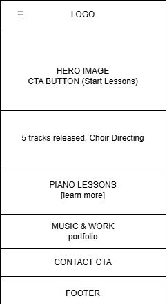
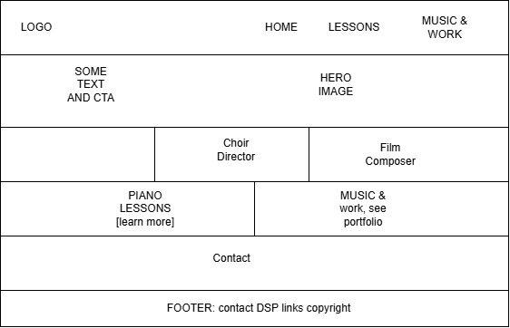

01
Site Name
Jayk Music Studio
The name is my own because the studio is built around my teaching, performance, and composing. It is aimed at parents searching for a private piano teacher, while also sharing my choir directing and production work.
Optional domain: Jaykmusicstudio.com
02
Site Purpose
This site brings together what people need to know about piano lessons, plus a look at the other music work I do. It is meant to help visitors quickly find:
- What lessons are like, which ages I teach, and how pricing works.
- Examples of my music, including released tracks and a film score credit.
- Ways for schools and choirs to reach out about guest directing or clinician work.
- How to contact me for lessons, performances, or music services.
03
Scenarios
These are the main questions the site should answer for visitors.
-
Parent of a prospective student
I'm trying to find a piano teacher for my 8-year-old. What ages do you teach, and how much are lessons?
-
Choir director
How do I get in touch with Jayden about guest conducting or clinician work?
04
Color Scheme
05
Typography
Display
Piano Lessons, Choir Direction & Original Music
Used for the page heading and all section headings (h1, h2).
Body — Work Sans
Lessons are built around the student's ear as much as their hands, drawing on real performance and production experience.
Used for all paragraph and list body text.
Utility — Space Mono
01 / SECTION LABEL / #C69B3F
Used for small numbered labels and caption text throughout the page.
06
Wireframe

